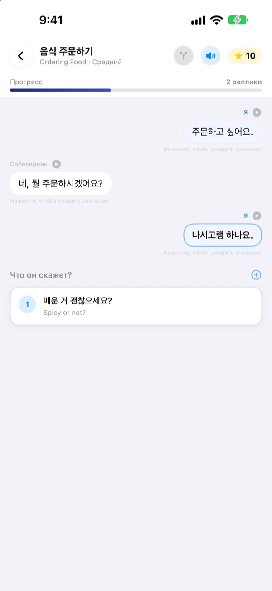
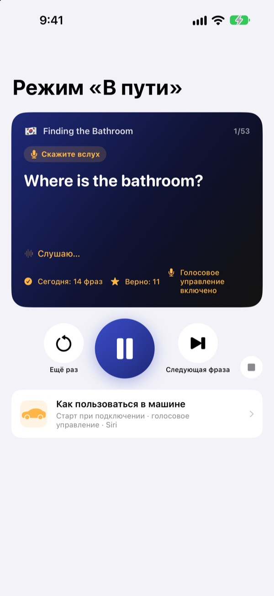
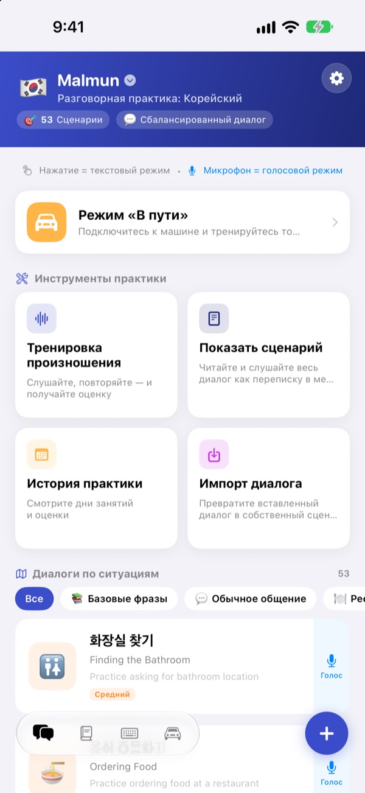
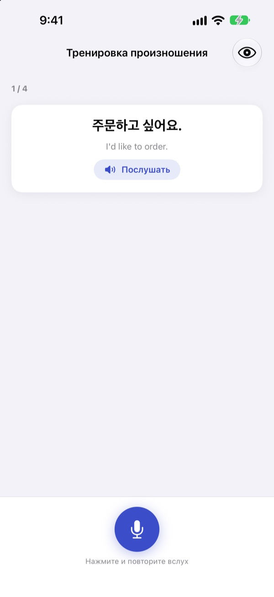

Хватит теряться.
Заговорите первым.
В тренажёре разговора Malmun каждый выбранный ответ уводит диалог в свою сторону. Учите корейский, японский, китайский, испанский или индонезийский, а в машине занимайтесь только на слух и голосом.
Ветвящиеся диалоги, тренировка произношения и словарь бесплатны.

Продолжите разговор сами
Это «Утреннее приветствие», индонезийский диалог прямо из приложения. Каждая выбранная фраза поворачивает разговор в другую сторону.
Фразу выучили, а ответить не смогли?
В учебнике диалоги всегда идут по сценарию. В жизни собеседник отвечает то, чего вы не ждали. Malmun заранее проводит вас по всем веткам разговора, чтобы следующая фраза была наготове, что бы вам ни сказали. Даже дорога домой становится временем практики.
Занимайтесь на слух за рулём
Режим «В пути» играет через динамики машины по Bluetooth или CarPlay. Сначала вы слышите перевод, после сигнала у вас есть время сказать фразу самому, затем ответ звучит один раз медленно и один раз в обычном темпе.
Листайте и повторяйте кнопками на руле или говорите next, again, slower, когда ваша очередь. Во время подсказок навигатора воспроизведение приостанавливается.

Все ситуации для поездок и жизни
В каждом языке 53 диалога по ситуациям: основы, повседневный разговор, ресторан, транспорт, аэропорт, отель, покупки, экскурсии и экстренные случаи.
Для тех, кто учит индонезийский, есть ещё больше: 5 авторских small talk, 3 курса «Один день» по 6 сцен с недельным расписанием и 100 слов для командировки.

Проверьте, правильно ли сказали
Тренировка произношения ставит оценку и выделяет цветом слова, которые получились, и те, что вы пропустили.
В сценарии весь диалог раскрывается как переписка. Прослушайте его целиком или скройте перевод и проверьте себя.

Начать можно в три шага
- 1
Выберите язык
Нажмите на флаг вверху главного экрана. Фразы и словарь хранятся отдельно для каждого языка.
- 2
Откройте диалог
Нажимайте ответы в текстовом режиме или нажмите микрофон и говорите: голосовой режим найдёт ближайший ответ.
- 3
В машине: режим «В пути»
Подключите iPhone к машине и нажмите воспроизведение. Смотреть на экран не нужно.
Управление режимом «В пути»
- Руль: следующий трек
- Следующая фраза
- Руль: предыдущий трек
- Та же фраза ещё раз
- Кнопка воспроизведения
- Пауза и продолжение
next·skip- Следующая фраза
again·repeat- Прослушать ещё раз
slower·faster- Изменить скорость чтения
next scene- Перейти к следующему диалогу
stop·pause- Закончить тренировку
- Siri: «Malmun: начать тренировку в пути»
- Начать, не касаясь iPhone
Когда приложение на русском, голосовые команды произносятся по-английски. Их слушают только в вашу очередь, после сигнала. Текущая фраза видна в информации о воспроизведении на экране машины. Отдельного экрана приложения в CarPlay нет.
Почти всё бесплатно. Malmun Pro открывает остальное.
Бесплатно
- Ветвящийся small talk и курсы «Один день» (индонезийский)
- Диалоги по ситуациям: основы и повседневный разговор
- Режим «В пути», 3 сцены в день
- Произношение, сценарий, импорт диалогов, история занятий
- Мои фразы, карточки слов, клавиатура фраз
- Обмен сценариями с друзьями, сценарии с помощью ИИ
Malmun Pro
- Все диалоги по ситуациям: ресторан, транспорт, аэропорт, отель, покупки, экскурсии, экстренные случаи
- Режим «В пути» без ограничений
- Действует для всех языков
Годовая подписка или разовая покупка навсегда
Цены смотрите в приложении и в App Store. Годовая подписка продлевается автоматически, если не отменить её минимум за 24 часа до конца периода.
Частые вопросы
Какие языки можно учить?
Корейский, японский, китайский, испанский и индонезийский. Интерфейс на русском, но перевод фраз и голосовые команды на английском, поэтому сам английский в списке не появляется.
Как пользоваться в машине?
Подключите iPhone к машине по Bluetooth или через CarPlay, откройте режим «В пути» и нажмите воспроизведение. Звук идёт из динамиков машины, текущая фраза видна в «Исполняется». Можно сказать Siri «Malmun: начать тренировку в пути» или один раз настроить автоматизацию в приложении «Команды», чтобы тренировка начиналась при подключении CarPlay (или Bluetooth машины).
Микрофон слушает всё время?
Нет. Он слушает только в вашу очередь, после сигнала, через микрофон iPhone, а услышанное обрабатывается на устройстве.
Моё произношение плохо распознаётся.
Распознавание речи работает на языке, который вы учите. Попробуйте в более тихом месте и проверьте, загружено ли распознавание речи для этого языка на устройстве.
Как добавить клавиатуру?
Откройте Настройки ▸ Основные ▸ Клавиатура ▸ Клавиатуры ▸ Новые клавиатуры и выберите клавиатуру Malmun. При наборе переключайтесь кнопкой с глобусом. Полный доступ не нужен. Чтобы фраз было меньше, нажмите значок клавиатуры в правом нижнем углу главного экрана ▸ Управление клавиатурой.
Не вижу сценарий, которым поделился друг.
Обмен работает через iCloud, поэтому вы оба должны войти в iCloud. Если сценарий всё равно не появился, полностью закройте приложение и откройте снова.
Что нужно, чтобы создавать сценарии с ИИ?
Введите в приложении свой ключ API Anthropic и напишите тему, и появится новый диалог. Всё остальное работает без ключа.
Как отменить подписку или вернуть деньги?
Платежи обрабатывает Apple. Отменить подписку можно в Настройках iPhone ▸ Аккаунт Apple ▸ Подписки ▸ Malmun. Возврат запрашивайте у Apple на reportaproblem.apple.com.
Сменил iPhone, и Pro пропал.
Войдите с тем же Аккаунтом Apple и в Malmun нажмите Настройки ▸ Malmun Pro ▸ Восстановить покупки.
Где хранится мой прогресс?
Аккаунт не нужен. Данные остаются на устройстве и в вашем iCloud. Ни рекламы, ни отслеживания: отправляются только анонимная статистика использования и отчёты об ошибках. Об ошибках и пожеланиях можно написать и в GitHub Issues (github.com/M1zz/IndonesianSmallTalk/issues).
Вопросы или пожелания? Пишите на leeo@kakao.com, через Настройки ▸ Отправить отзыв в приложении или в Instagram @lee25_ios.